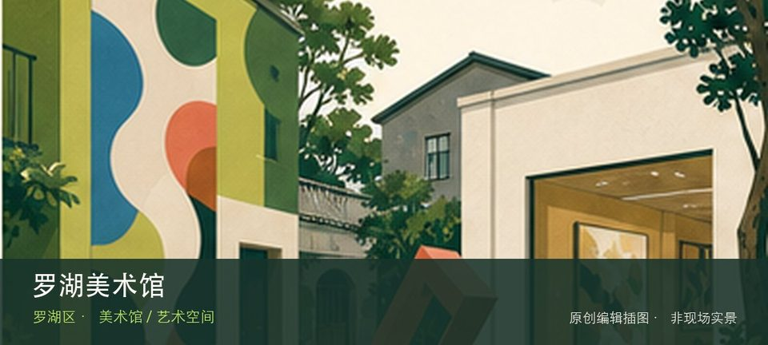
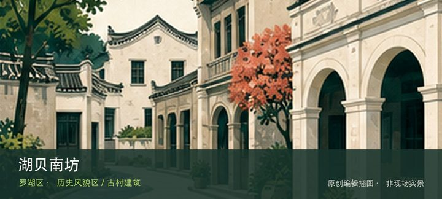
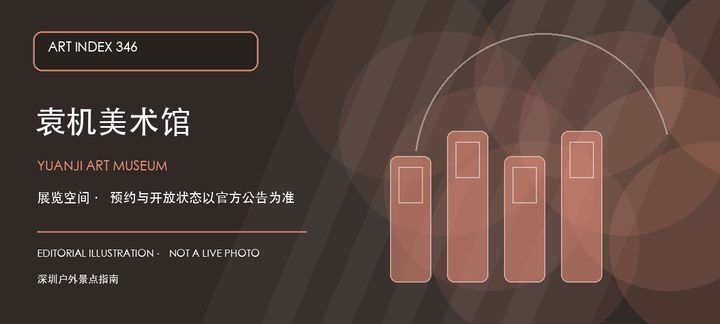

适合谁
适合愿意阅读展讯并细看少量作品的人；只想寻找固定常设展或网红机位者应先降低预期。

SHENZHEN GUIDE · 058
南极路 · 美术馆 / 艺术空间
罗湖美术馆位于南极路，区级公共美术馆面向当代艺术、本地创作和公共教育，适合与东门老街形成新旧城市文化对照。先辨认罗湖本地艺术展，再观察当代主题项目，两者共同说明这里为何不能被同类地点的泛化标签替代。这里的价值随展期变化，应把罗湖本地艺术展与当代主题项目放在同一次观看中，辨认作品、空间和所在街区的关系。先查当期展讯与入口，不把官方名录中的地址等同于随时可入场。
WHY GO
适合愿意阅读展讯并细看少量作品的人；只想寻找固定常设展或网红机位者应先降低预期。
先核对罗湖美术馆当天开放与入口，从罗湖本地艺术展开始；体力或时间不足时，在前往当代主题项目之前结束，不临时追加陌生支线。
公共交通先到南极路片区，再以罗湖美术馆公开参观入口为终点；校园、园区或预约型场馆须同时核对门禁与开放日。
自驾优先使用罗湖美术馆所属建筑、园区或邻近正规公共停车场；预约时一并确认车牌登记、门岗和社会车辆准入规则。
全年可安排，炎热和降雨日更友好；展期、开幕活动与换展闭馆比季节本身更影响体验。
NEARBY IDEAS

编辑配图·非现场实景湖贝南坊位于东门街道湖贝旧村，首批历史风貌区保留老深圳墟周边村落尺度，旧巷、传统建筑与高密度商业城区形成强烈对照。
 授权实景图
授权实景图
东门老街位于深圳老街片区，今日商业步行街覆盖了深圳墟的历史地层，街巷尺度、老字号与密集商业共同呈现城市从墟市成长的线索。

编辑配图·非现场实景袁机美术馆位于沿河南路汝南实业股份有限公司大厦四楼，官方名录确认了馆名和楼宇地址。